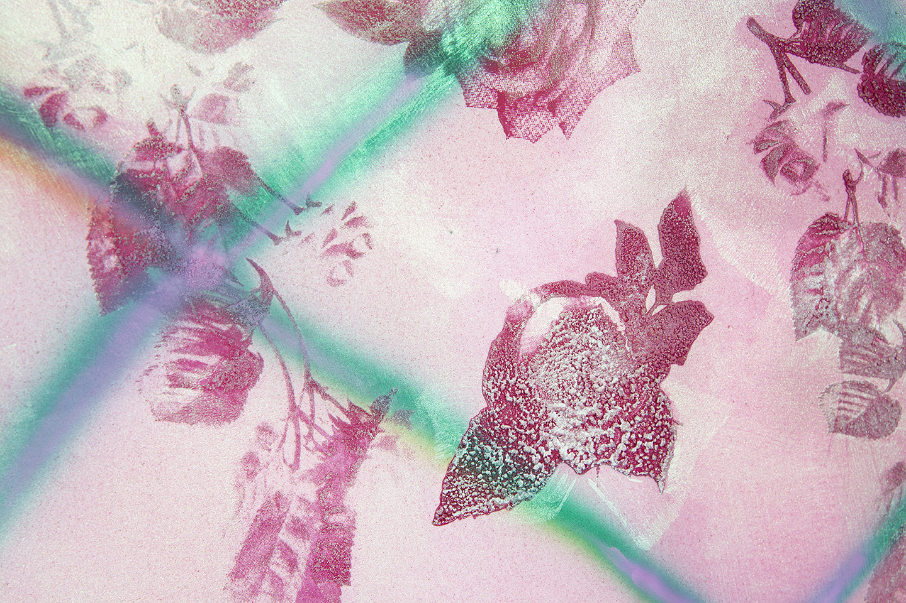

Brianna Rose Brooks
Brianna Rose Brooks, Garden Bed2021, acrylic, airbrush, and silkscreen on canvas, 50 × 60″"> Brianna Rose Brooks, Garden Bed (detail)
2021, acrylic, airbrush, and silkscreen on canvas, 50 × 60″">
 Brianna Rose Brooks, Thesis Painting (Uptown)
Brianna Rose Brooks, Thesis Painting (Uptown)2021, oil, acrylic, silkscreen, and airbrush on canvas, 60 × 72″"> Brianna Rose Brooks, Pot head #2
2021, airbrush, collage, and colored pencil on paper, 11.5 × 8″"> Brianna Rose Brooks, Pot head
2020, colored pencil, Swarovski crystal, and collage on paper, 11.5 × 8″"> Brianna Rose Brooks, Patriot
2020, marker, colored pencil, and collage on paper 10.5 × 7″"> Brianna Rose Brooks, Gatekeepers
2020, oil, acrylic, and airbrush on canvas, 36 × 48″">
Often manifested in the emotionally charged space of the diary or journal, Brianna Rose Brooks’ work aims to represent Blackness, love, and vulnerability as they continuously shift through public and private memory and thought. The work incorporates abstract narratives of intimacy, care, and self-reflection, as well as more formidable and antagonistic sentiments: anger, jealousy, dependence, fear. Brooks attempts to bridge the gap between what is traditionally considered fine art and the art forms, traditions, and eternal representations that shape their identity as they interrogate the transient status of queer black adolescence in America.